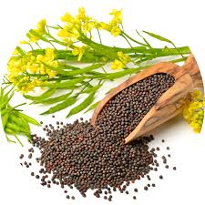

Mustard is an important oilseed crop belonging to the Brassicaceae family. Common varieties include yellow, brown, and black mustard. It is widely cultivated in India and used for oil extraction, spices, and food preparation.
Mustard grows best in cool and dry climatic conditions. The Rabi season provides suitable temperature for flowering and seed formation, resulting in better oil content and yield.
Mustard seeds are rich in oil, protein, and essential nutrients. Mustard oil is widely used for cooking and medicinal purposes. The crop provides good income to farmers and improves soil structure.
| Factor | Requirement |
|---|---|
| Best Season | Rabi (Winter) |
| Soil Type | Well-drained loamy soil |
| Temperature | 10°C – 25°C |
| Water Requirement | Low to Moderate |
| Sunlight | Full Sun |
| Harvest Time | 110 – 140 days |